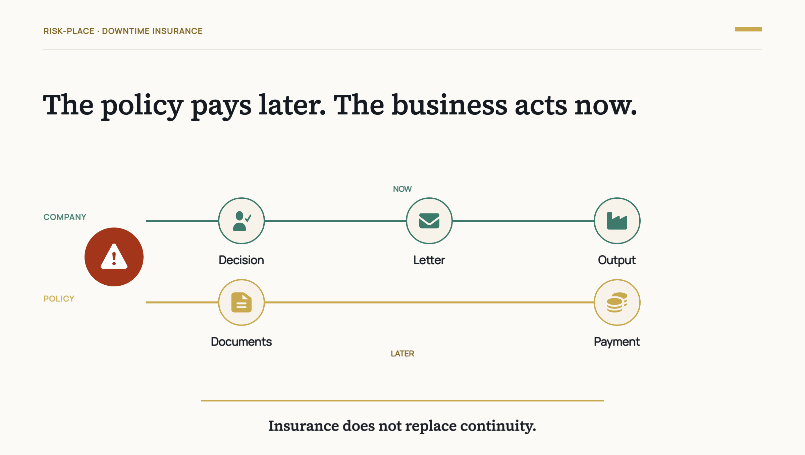

After a strike, it is tempting to assume that insurance will cover the loss. Between the incident and a payment lie assessment, documents and the terms of the specific contract. Throughout that period, customers need answers, employees need paying and the site needs to decide which output can be preserved.

The policy and production run on different clocks
Start with the contract. Which event is covered, is there a waiting period, which exclusions apply and what limit is set? There is no universal answer: the wording depends on the policy, so read your own document.
Then compare those terms with the actual site timeline. If the stoppage begins in the morning and the contractual waiting period exceeds the downtime the business can tolerate, the gap needs prepared decisions, reserves and an alternative operating path.
Evidence is assembled on the most difficult day
The insurer will need a clear account of the event: when the stoppage began, which processes were affected, what the company decided and how shipping changed. Some of this information is easily lost if the log is completed retrospectively.
- Record the times of the stoppage, restart and key decisions.
- Keep correspondence with customers, suppliers and contractors.
- Link the loss calculation to production and financial records.
- Ask your insurer in advance which evidence your particular contract requires.
Your own calculation comes before the payment discussion
Calculate the cost of one day for each critical node: lost shipments, continuing costs, penalties and the cost of returning to previous throughput. Separately identify the output that an alternative can preserve and the orders whose dates must change.
This calculation helps beyond the insurance discussion. It shows the owner how many days the company can finance recovery independently and which reserve will have the greatest effect. Without your own figure, the policy limit is difficult to compare with the real consequences.
Payment and recovery proceed in parallel
Do not postpone the operating path until the insurance process ends. Assign responsibilities, warn counterparties, start permissible manual output and assemble the insurer's documents at the same time. These are two separate tracks with different tasks.
A drone strike readiness check can compare the cover with the cost of the day, test the evidence chain and show which part of the downtime remains with the company.
Frequently asked questions
No. A policy governs financial compensation under its contractual terms. Roles, counterparty messages and maintaining output remain the company's responsibilities.
Ask your insurer about its requirements. A timeline, decision log, correspondence about dates and a calculation linked to production and financial records are usually useful.
Compare the limit, waiting period and exclusions with your own cost of one day and your tolerable downtime. Without that calculation, the limit is an abstract amount.
Is your team ready for the first hour of a crisis?
You test a plan by running a scenario. Reading it is not enough. The assessment shows the gaps, and the corporate format works through them with your team on your own processes.